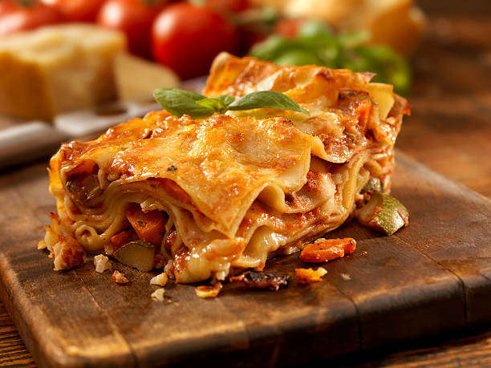

The best Lasagna recipe

Lasagne Verdi alla Bolognese
This recipe is adapted from the official lasagne by the Bolognese Chamber of Commerce, with a few tweaks inspired by locals—adjusting the meat, wine, and whether to add milk. One non-negotiable: Green lasagne sheets are essential. The ragù is simple, with no garlic, herbs, or spices. Fresh pasta eliminates the need for pre-boiling.
Ingredients:
- 1 pack of Lasagna
- 500g ground beef
- 1 onion
- 2 cloves garlic
- 400g tomato pire
- 200g grated cheese
- salt, pepper, origano
- 2 spoons of olive oil
- 1 egg
- 500ml milk
- 50g flour
- 50g butter
- nutmeg (optional)
- 1 bay leaf
- 1 glass of white wine (optional)
- Parmesan cheese for topping
- Fresh basil leaves (optional)
Steps
- Prepare the ragù: In a large pan, heat olive oil over medium heat. Add chopped onion and minced garlic, sauté until translucent.
- Add ground beef, cook until browned. Pour in white wine (if using) and let it evaporate.
- Stir in tomato puree, season with salt, pepper, oregano, and add the bay leaf. Simmer for about 30 minutes.
- Make the béchamel sauce: In a saucepan, melt butter over low heat. Stir in flour to form a roux, cook for 1-2 minutes.
- Gradually whisk in milk, cooking until thickened. Season with salt, pepper, and nutmeg (if using).
- Preheat oven to 180°C (350°F).
- Assemble the lasagna: Spread a layer of ragù on the bottom of a baking dish. Place lasagna sheets on top.
- Add a layer of béchamel sauce and sprinkle with grated cheese. Repeat layers until all ingredients are used, finishing with béchamel and cheese on top.
- Bake for 30-40 minutes until golden and bubbling. Let it rest for 10 minutes before serving.
- Garnish with fresh basil leaves if desired. Serve hot and enjoy your authentic Lasagne Verdi alla Bolognese!